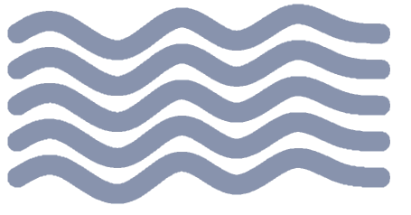
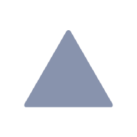
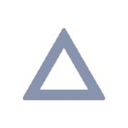
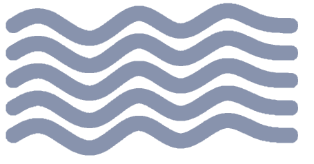
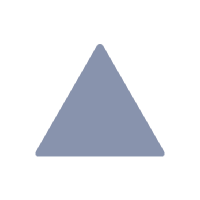
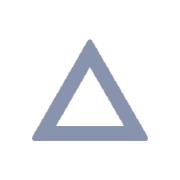
Ich bin Tamás Tóth und wie viele andere Kleinunternehmer war ich während der Covid-Pandemie völlig pleite. Ich arbeitete in der Website-Entwicklung, mein Unternehmen ging fast pleite und ich konnte nicht einmal meinen Lebensunterhalt bestreiten. Tatsächlich war ich nicht nur pleite, ich war verzweifelt.
Dann hatte ich eines Tages eine „verrückte Idee“.
Ich suchte nach allen möglichen Materialien für Vertriebsexperten, die mir helfen würden, eine bestimmte Art von Vertriebswebsite für kleine Unternehmen viel effektiver zu erstellen.
Mit der kleine Unternehmen Geld verdienen und ihren Umsatz steigern können
und mit der sie gegen Großkonzerne konkurrieren können.
Bis zu diesem Zeitpunkt hatte ich mich nur mit der technischen Seite der Webentwicklung beschäftigt.
Meine Entwicklerfreunde lachten über die Idee.
Sie hielten es für einen Witz.
Sie sagten: „Ich bin ein Träumer.“
Sie sagten, ich sei verrückt.
Einer meiner leitenden Entwicklungskollegen bedauerte, dass das Unsinn sei.
Er sagte, ein kleines Unternehmen könne unmöglich mit seinen millionenschweren Konkurrenten konkurrieren.
Es sei einfach zu unfair. Ihr Vorteil sei zu groß.
Ja? Nun, mir war das egal.
Ich fand die Idee trotzdem großartig.
Ich begann, Dinge zu lernen wie...
Positionierung, Entwicklung von Wertangeboten,
Alleinstellungsmerkmal (USP).
Text Selling, AIDA, IDCA,
PASTOR, 4P, 4U, AIDPPC-Strategien, FAB-Formel, Open Loop.
Hook-Strategien, Entscheidungslogik,
Käuferpsychologie und Emotionen,
Storytelling.
Überschrift und Aufmerksamkeit, Argumentation, Call-to-Action-Taktiken (CTAs),
FOMO, Preispräsentation, Balance-Prinzip.
Überzeugung und Abschluss, unterschwellige eingebettete Befehle, kognitive Verzerrung.
Ich habe die erstaunlichen, millionenschweren,
erprobten Vertriebssysteme von Gary Halbert und Jay Abraham studiert.
Geschäftsprozessoptimierung, Geschäftsentwicklung,
Conversion-Rate-Optimierung (CRO),
Marktforschung, Wettbewerbsanalyse,
A/B-Tests, Verkaufstrichter,
Effizienzsteigerung.
… und noch mehr.
Alle effektiven Vertriebsstrategien und -taktiken, die große Unternehmen gerne bei ihren Kunden einsetzen.
Aber genau das verpassen kleine Unternehmen.
Weil sie sich kein professionelles Marketingteam leisten können.
… und wissen Sie was? Diese Methoden funktionieren tatsächlich auch für kleine Unternehmen.
- Bauen Sie eine Online-Präsenz auf, die nicht nur Kunden anzieht, sondern auch langfristig treue Kunden aufbaut.
- Nutzen Sie bewährte Vertriebssysteme und -strategien, um Ihren Umsatz zu steigern.
- Positionieren Sie Ihr Unternehmen als beste Wahl in Ihrer Branche.
- Bauen Sie ein Unternehmen auf, das online stetig wächst und Kunden anlockt.
- Bauen Sie finanziellen Erfolg auf, der es Ihnen ermöglicht, das Leben Ihrer Träume zu leben.
 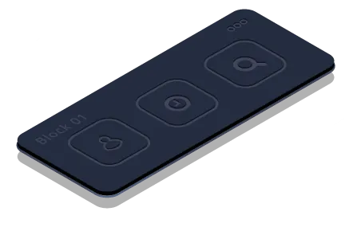
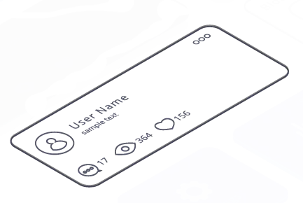
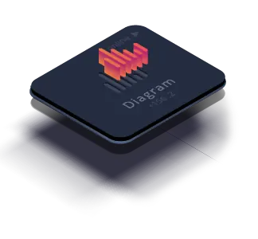
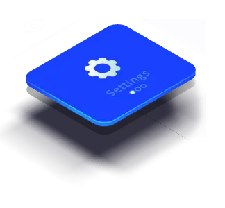
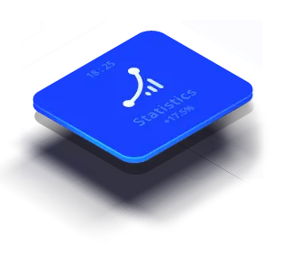
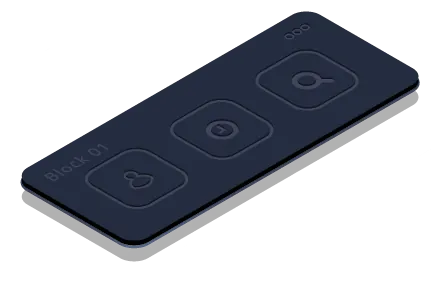
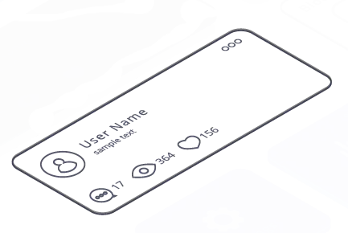
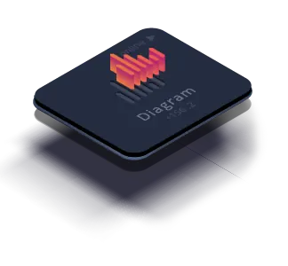
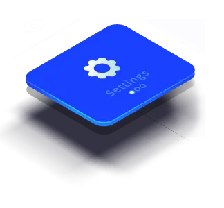
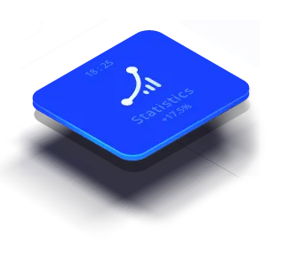